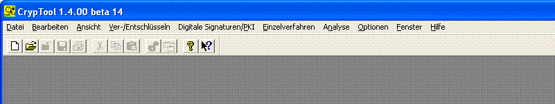
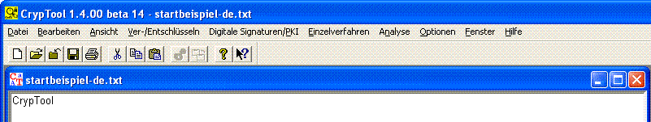

In CT1 können immer alle Menüs aufgeklappt werden. Auswählbar sind aber nur die Menüpunkte, die zu dem aktuell geladenen Dokumenttyp passen, die restlichen Menüpunkte sind ausgegraut. Welche Funktionen in den Menüs ausgewählt werden können, hängt also vom Typ des aktiven Dokuments (Text, Binär oder Grafik) ab, und davon, ob ein Dokument geöffnet ist. Angezeigt bekommen Sie aber immer alle Menüpunkte.
Wenn gar keine Datei geladen ist, sieht die Menüleiste folgendermaßen aus (alle Hauptmenüs können selektiert werden; aber die meisten Icons der Iconleiste sind inaktiv):

Ist eine Text-Datei geladen, sieht die Menüleiste folgendermaßen aus:

Ein Bild des kompletten Menübaums befindet sich im Anhang A1 des CT-Buchs: Diese Übersicht zeigt alle in CT1 enthaltenen Menü-Einträge.
Außerdem kann man den kompletten Menübaum auf der CrypTool-Webseite zu CT1 finden (dort ist nicht nur der Menübaum für die deutsche Version, sondern da sind die Menübäume für alle Sprachversionen von CT1).